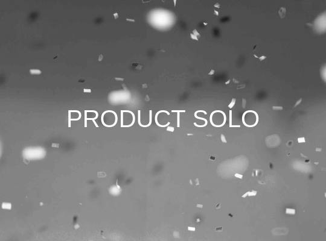

Dari ngelamun ke action, panduan membuat projek UI UX yang inovatif agar dipandang masyarakat dan HRD.
Tulisan Kolaborasi oleh Thariq Luqmana dan Faisal Akbar Anwari

Awalan
Ini adalah sebuah panduan pembuatan projek dari sisi UI/UX Designer supaya kamu bisa membuat projek yang gak cuman design yang menarik saja. Tetapi projek yang bener-bener inovatif dan memecahkan masalah di masyarakat. Tetapi sebenernya, apa saja sih yang mesti dibutuhin dan dipikirin untuk membuat projek yang bener-bener mecahin masalah di masyarakat?
Penentuan topik
Pada bagian topik, kalian akan menentukkan tema permasalahan dari yang kalian angkat dan ingin kalian buat sebuah aplikasi, atau kalian membuat revamp dari permasalahan kalian. Misal:
- Revamp Taxsee from Maxim Application
- Help Users To Overcome Mental Health Caused By Social Media With Yournal App
Dalam menentukan topik ini, sebenernya masih belum menarik. Dia akan menarik ketika kamu sudah melakukan tahapan-tahapan tertentu di UI/UX Design yang sesuai sama Design Thinking. Kalian juga belum melakukan research dan kalian mesti brainstorming terlebih dahulu supaya pemikiran antar tim itu saling terkoneksi dan mendukung antar sesama. Jadi penentuan topik ini hanya supaya apa yang ingin kalian lakukan itu ada identitas dan targetnya. Kira-kira siapa kalian? aplikasi apa ini? apa yang ingin kalian pecahkan? Kurang lebih seperti itu.
Problem Statement
Pada bagian ini kalian akan mengisi permasalahan apa yang kalian lihat secara kasar dan gambaran yang lebih luas, atau hanya menyadur dari berita dan penelitian yang ada terkait topik yang kalian tentukan. Supaya yang kalian buat tidak hanya “ngelamun-ngelamun” dan “awang-awang” saja. Kalian bikin topik itu juga ada data dan dasarnya, kenapa kalian bikin projek dengan topik tersebut.
Tips dan Trik:
- Sering-sering lihat berita atau informasi dari media sosial. Banyak-banyak mencari inspirasi dan peka terhadap apa yang terjadi.
- Sering-sering peka dan mengamati lingkungan sekitar seperti di tempat umum, ojek online, taksi, di kantor, dll.
- Mencoba menggali informasi dengan menanyakan sesuatu yang kalian anggap penting dan bermasalah kepada orang tertentu. Misal bila kalian ingin mengangkat isu tentang ojek online, kalian bisa menanyakan hal-hal singkat dan sederhana saja seperti basa-basi kepada orang tersebut, tetapi sebenarnya kalian mendapatkan informasi yang penting terhadap permasalahan tersebut.
Ingat teman-teman, pada bagian ini problem statement kalian belum tervalidasi. Masalah yang sebenarnya akan nampak ketika kalian sudah melakukan user interview dan sudah dijabarkan berdasarkan affinity map. Nantikan step-step selanjutnya guys, sabar dan tetap semangat.
Kriteria Partisipan
Demografis
Informasi demografis biasanya terkait dengan umur dan kependudukan orang tersebut.
Geografis
Informasi Geografis biasanya terkait dengan tempat, topografi, lingkungan dan iklim di tempat tersebut.
Psikografis
Mengelompokkan pelanggan berdasarkan atribut psikologis, seperti nilai, sikap, gaya hidup, minat, dan pola perilaku.
Perilaku
Mengelompokkan pelanggan berdasarkan perilaku konsumen, seperti pola pembelian, interaksi merek, tingkat penggunaan, loyalitas merek, dan respons terhadap pemicu pemasaran.
Tips dan trik: pada bagian ini sebetulnya tidak ada sebuah makna tertentu seperti pembahasan sebelumnya. But just let me tell you something bahwa ini akan mempermudah kalian membuat user persona nanti. Jadi kalian harus bikin bener-bener dan mindful sama kriteria partisipan ini. Kalian harus tahu secara pasti siapa target market kalian, siapa target user kalian. Karena perpaduan antara kriteria partisipan dan masalah yang sudah kalian validasi dengan user interview dan kalian jadikan sebuah karakter yang disebut User persona itu adalah hal yang penting dalam membuat hal tersebut.
Hipotesis
Pada bagian ini, kalian harus mencoba kreatif menciptakan asumsi dari permasalahan kalian. Kira-kira apa akar dan solusi sederhana dari permasalahan kalian Tips and Trick akan dijelaskan beserta contohnya seperti ini:

Jadi pada bagian kalimat pertama itu menjelaskan, akar masalahnya terlebih dahulu. Caranya biar masalahnya menarik->, kalian harus mengaitkan 1 hal dengan lainnya. Contohnya seperti diatas, mental yang buruk juga disebabkan karena penggunaan handphone secara berlebihan. Maka disini ada 2 variabel, yaitu Mental yang buruk + Handphone.
Lalu untuk solusinya baru ada variabel ke-3, yaitu mindfulness. Kedua hal tadi digabungkan dengan variable terakhir yang bisa memberikan solusi. Maka peneliti disini berpikiran, bagaimana orang yang mental buruk dan sering menggunakan Handphone diberikan aplikasi yang membantu mengurangi masalah mental dengan cara mindfulness di handphone tersebut.
Jadi guys, rumusnya adalah 2 variabel masalah + 1 variabel solusi. Baru kalian jadikan dalam sebuah kalimat yang rapi. Jadilah hipotesis.
Pertanyaan Interview
Sebagai UI/UX Designer, hal utama yang harus dimiliki adalah empati. Kita harus berempati terhadap orang yang sedang menghadapi masalah tersebut. Kita harus memiliki sifat user centered dalam membuat inovasi yang terkait dengan aplikasi startup ini. Maka kita harus menggali masalah sedalam-dalamnya terhadap partisipan kita dan menemukan isi lubuk hati mereka terkait masalah yang dialami. Maka kita harus membuat pertanyaan dengan sebaik mungkin.
Tips dan trik membuat pertanyaan untuk interview adalah:
- Awali dengan menggali informasi penting dari user tersebut. Ini berguna supaya kita bisa menyesuaikan dari POV yang berbeda dari kita. Kita mencoba menjadi orang yang sama dan mendalami apa motivasi dan keresahan dari orang tersebut.
- Perbanyak pertanyaan dengan berawalan Apa, bagaimana, dan mengapa. Supaya kita tau alur permasalahan dari apa yang menjadi keresahan user.
- Dan yang terpenting, nanti kita pasti akan mengeluarkan pertanyaan yang diluar dari pertanyaan yang kita buat. Misal kita membuat pertanyaan, “kenapa membayar di aplikasi kasir ini sangat susah”. Nah ketika orangnya menjawab, biasanya jawabannya itu ga sepenuhnya yang dirasakan user itu. Misal dia menjawab “karena antarmukanya sangat membingungkan”. Disini kita bingung, kenapa antarmukanya membingungkan, kita harus gali lagi dengan pertanyaan tambahan yang diluar dari yang kita rencanakan seperti “kenapa antarmukanya membingungkan”. Kita introgasi terus sampai user menjawab. Misal “saya merasa tombolnya terlalu kekecilan dan tidak ada penanda di setiap section”. Barulah kita mendapat insight dari user tersebut.
- Supaya kita mudah menentukan pertanyaan apa yang ingin kita buat. Sebaiknya ketika sedang menentukan plan research seperti diatas menentukan topik sampai kriteria partisipan, kita juga membuat How might we(HMW). HMW ini adalah metode yang membantu mengandai-andaikan apa yang akan kita buat secara kasaran dan cepat. Sehingga kita dapat berpikir jauh mengenai masalah dan solusi apa yang kita ingin angkat. Tapi jangan jadikan ini patokan asli research ini ya, kami menyarankan HMW ini karena membantu kita berpikir lebih jauh dalam waktu yang singkat. Sehingga pertanyaan yang dibuat itu intuitif dan mengena.
Hal penting dalam user interview
Saking pentingnya, bagian ini sampai dibuat section tersendiri. Yaitu membuat verbatim. Ini akan sangat banyak melelahkan. Tetapi ini sangat penting. Karena kalian akan mengelola data yang kalian sudah divalidasi/hasil dari user interview kalian supaya bisa ditetapkan dan dijabarkan masalah sesungguhnya.
Tips dan Trik: Yap, sangat mudah sekali ditebak. Yaitu menggunakan teknologi Ai supaya bisa merubah suara ke text. Pakai capcut dirubah satu-satu juga bisa, karena capcut ada fitur audio to text. Lalu di internet banyak sekali web-web yang membantu kalian merubah audio ke teks.
User Persona
User Persona adalah langkah penting dalam desain UI/UX untuk memastikan produk yang kamu buat benar-benar relevan dengan pengguna. Dengan riset yang mendalam, kamu bisa memahami kebutuhan, frustrasi, dan tujuan audiens, sehingga desain yang dihasilkan bukan hanya estetik, tapi juga fungsional. Membuat User Persona dimulai dari mengumpulkan data pengguna, mengidentifikasi tujuan dan masalah mereka, lalu merangkai persona yang detail dan representatif. Dengan persona ini, kamu bisa lebih mudah menyesuaikan desain dan memastikan pengalaman pengguna berjalan mulus.
Untuk membuat User Persona yang efektif, ikuti langkah-langkah berikut dengan tips & trick menarik di setiap tahapnya:
- Riset Audiens: Mulailah dengan wawancara pengguna atau analisis data dari tools seperti Google Analytics. Tips: Jangan hanya fokus pada data demografi, gali juga motivasi dan pain points mereka. Pertanyaan seperti, “Apa yang bikin kamu frustrasi saat pakai produk ini?” bisa sangat berguna!
- Identifikasi Tujuan dan Frustrasi Pengguna: Kenali apa yang ingin dicapai pengguna dan masalah apa yang mereka hadapi saat menggunakan produkmu. Tips: Buat skenario nyata yang menggambarkan frustrasi mereka. Ini membantu tim desain lebih peka terhadap kebutuhan pengguna.
- Buat Persona yang Detail dan Hidup: Tambahkan nama, usia, pekerjaan, dan hobi pada persona. Jangan lupa, masukkan juga goals dan challenges yang mereka hadapi. Tips: Bikin persona kamu seperti “orang nyata”. Berikan cerita di balik tiap persona untuk membuatnya lebih mudah dipahami oleh tim.
- Fokus pada Persona Utama: Jangan membuat terlalu banyak persona! 2-3 persona utama yang mewakili audiens sudah cukup. Tips: Fokus pada persona yang akan menggunakan produkmu secara rutin, bukan hanya sesekali.
- Gunakan Persona Sebagai Panduan Desain: Saat mendesain UI/UX, selalu tanyakan, “Apakah persona ini akan suka atau nyaman dengan desain ini?” Tips: Libatkan persona dalam setiap diskusi desain. Ini membantu memastikan produk tetap relevan dengan kebutuhan pengguna.
- Evaluasi dan Update Persona Secara Berkala: Pengguna berkembang, begitu juga kebutuhan mereka. Jadi, jangan lupa untuk memperbarui persona sesuai feedback pengguna terbaru. Tips: Evaluasi setiap 6 bulan untuk melihat apakah ada perubahan signifikan pada audiens atau kebiasaan pengguna.
Affinity Map
Affinity Mapping adalah teknik penting dalam desain UI/UX untuk mengelompokkan data dan temuan riset pengguna berdasarkan pola atau tema tertentu. Setelah membuat User Persona, Affinity Mapping membantu tim memahami lebih dalam perilaku, kebutuhan, dan tantangan pengguna dengan mengelompokkan wawasan yang telah dikumpulkan selama proses riset. Teknik ini memungkinkan desainer dan tim untuk melihat pola umum di antara persona yang berbeda, sehingga memudahkan mereka untuk mengidentifikasi masalah utama dan menentukan prioritas dalam desain. Dengan Affinity Mapping, data yang awalnya terpisah-pisah bisa menjadi lebih terstruktur dan mudah dipahami, sehingga tim dapat membuat keputusan yang lebih terarah dan relevan.
Untuk melakukan Affinity Mapping dengan efektif, ikuti langkah-langkah berikut beserta tips & trik menarik di setiap tahapnya:
- Kumpulkan Semua Data Pengguna: Mulailah dengan mengumpulkan hasil riset dari wawancara, survei, observasi, atau analisis data. Tips: Pastikan semua temuan dicatat, baik yang kecil maupun besar, karena insight terkecil kadang memberi dampak besar!
- Gunakan Sticky Notes atau Tools Digital: Visualisasikan data dengan sticky notes di papan atau gunakan aplikasi seperti Miro atau FigJam. Tips: Tuliskan satu insight per sticky note agar lebih mudah diorganisir dan dianalisis.
- Kelompokkan Berdasarkan Pola atau Tema: Kelompokkan sticky notes berdasarkan pola, tema, atau masalah yang serupa. Fokus pada pain points, kebutuhan, atau preferensi pengguna. Tips: Jangan takut untuk memindahkan sticky notes di tengah proses. Kadang, wawasan baru muncul saat pola terlihat lebih jelas!
- Libatkan Tim dalam Diskusi: Ajak seluruh tim, termasuk pengembang dan stakeholder, untuk ikut berpartisipasi dalam proses pengelompokan. Ini memastikan bahwa insight dari berbagai perspektif dipertimbangkan. Tips: Buat sesi ini kolaboratif dan fun, bisa dengan brainstorming atau voting untuk kategori yang dianggap paling penting.
- Identifikasi Prioritas dan Insight Utama: Setelah data dikelompokkan, tentukan mana temuan yang paling mendesak atau signifikan bagi desain UI/UX. Tips: Fokus pada masalah yang sering muncul di berbagai persona. Ini akan membantu tim memprioritaskan solusi yang berdampak besar.
- Simpan Hasil Mapping untuk Referensi Selanjutnya: Jangan lupa untuk menyimpan hasil Affinity Mapping sebagai referensi ketika membuat user journey maps, wireframes, atau bahkan saat evaluasi desain. Tips: Dokumentasikan dengan jelas, baik itu dalam bentuk foto atau secara digital, agar mudah diakses dan digunakan lagi di kemudian hari.
Point Of View User
POV User itu penting banget buat bikin desain UI/UX yang nggak cuma keren, tapi juga bener-bener “nyambung” sama penggunanya. POV User, atau sudut pandang pengguna, ngajak kita buat ngelihat dunia dari mata pengguna: gimana sih mereka pakai produk kita? Apa yang mereka rasain? Dengan memahami POV User, kamu bisa ngehindarin desain yang ribet atau bikin bingung. Intinya, desain yang pas itu yang bisa ngebantu user mencapai tujuannya dengan cepat dan gampang. Jadi, jangan cuma mikirin desain yang cakep, tapi juga gimana penggunanya bakal ngerasain produk kita dari awal sampai akhir.
Biar makin paham POV User, ini beberapa tips & triknya:
- Kenali Masalah yang Mereka Hadapi: Luangkan waktu buat bener-bener dengerin keluhan dan masalah pengguna. Tips: Coba jadi “user bayangan” dulu, pakai produk seolah-olah kamu adalah pengguna baru. Rasakan apa yang mereka rasain!
- Uji Langsung Desain ke Pengguna: Jangan langsung pede sama desain kamu. Tes dulu ke beberapa user biar dapet feedback nyata. Tips: Lakukan user testing di lingkungan nyata mereka, biar tahu bagaimana desain kamu bekerja di dunia asli.
- Selalu Update Sesuai Perubahan Kebutuhan: Pengguna terus berkembang, begitu juga kebutuhan mereka. Pastikan kamu selalu up-to-date dengan tren dan teknologi baru. Tips: Pantau feedback dari user lewat review atau survei, dan segera adjust desain kamu kalau dibutuhkan.
User Story
User Story itu ibarat cerita pendek yang ngebantu tim desain atau developer paham apa yang sebenarnya diinginkan pengguna. Jadi, dalam User Story, kita ngejelasin kebutuhan pengguna secara simpel tapi jelas. Biasanya ditulis dari sudut pandang pengguna dengan format “Sebagai [tipe pengguna], aku mau [apa yang diinginkan], supaya [tujuan].” Contohnya: “Sebagai pengguna baru, aku mau daftar akun dengan cepat supaya bisa langsung pakai aplikasi.” Dengan User Story, tim jadi lebih fokus ke hasil yang diinginkan pengguna, bukan cuma sekadar bikin fitur keren yang nggak ada fungsinya.
Biar User Story kamu makin mantap, yuk ikuti tips & trik ini:
- Keep it Simple! Bikin User Story yang singkat dan to the point. Fokus ke apa yang user pengen, bukan detail teknis. Tips: Pakai bahasa yang dimengerti semua orang di tim, jangan terlalu ribet!
- Fokus ke Nilai untuk Pengguna: User Story harus selalu punya dampak buat pengguna. Pastikan ada manfaat nyata di balik setiap cerita yang kamu tulis. Tips: Selalu tambahin alasan kenapa pengguna pengen fitur itu, biar tim paham pentingnya.
- Kolaborasi dengan Tim: User Story bukan cuma tugas desainer atau developer. Diskusi bareng tim lain biar semua sepakat sama tujuan dan hasil yang diharapkan. Tips: Ajak stakeholder buat review User Story, biar dapet insight tambahan.
Wireframe
Wireframe itu kayak cetak biru desain UI/UX, bro! Simpelnya, wireframe adalah kerangka dasar dari tampilan aplikasi atau website sebelum desain yang lebih detail diterapkan. Di sini, kita ngatur layout, posisi elemen-elemen penting kayak tombol, gambar, dan teks. Gimana user bakal navigasi? Di wireframe inilah semuanya disusun biar nggak ada yang terlewat. Jangan langsung mikir warna atau gaya visual dulu, wireframe fokus ke fungsi. Dengan wireframe, tim desain bisa tahu apakah flow-nya udah benar atau ada yang perlu diubah sebelum masuk ke tahap desain final.
Biar wireframe kamu makin solid, simak tips & trik ini:
- Keep It Simple, Bro! Nggak perlu ribet-ribet dulu. Fokus ke penempatan elemen dan flow. Tips: Gunakan garis sederhana atau kotak buat tiap elemen. Jangan buang waktu mikirin detail warna atau font dulu!
- Gunakan Tools yang Mudah: Banyak tools gratis dan simpel buat bikin wireframe, seperti Figma, Balsamiq, atau bahkan kertas dan pensil. Tips: Mulai dengan sketsa di kertas kalau kamu butuh brainstorming cepat, lalu pindah ke tools digital untuk versi lebih rapi.
- Uji Coba dengan User Sederhana: Coba kasih wireframe ke pengguna atau tim lain buat dapet feedback. Lihat apakah mereka ngerti flow-nya atau bingung. Tips: Jangan ragu buat revisi berulang kali sampai flow-nya terasa pas dan mudah diikuti.
Kesimpulan
Ingin tau kelanjutan dari tips and trick kita dalam membuat dokumen projek UI/UX yang baik seperti apa? Silahkan download link disini. Template pengerjaan UI/UX disertai dengan panduan lengkap seperti diatas. Ayo semangat berkarya dan mengharumkan nama bangsa!!